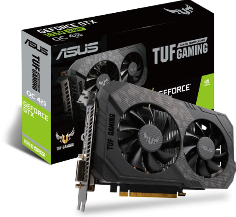
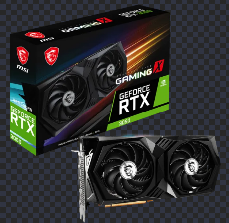

Powered by NVIDIA GeForce GTX 1650 SUPER GPU
Two IP5X dust resistant fans pre-installed
Integrated with 4GB GDDR6 memory and 128-bit memory interface
Features Dual link DVI-D, HDMI (2.0b) and DisplayPort (1.4)
Core Clock: Base 1530, Gaming 1770, OC 1800 MHz
Features NVIDIA Turing GPU Architecture with 12nm process
G3D benchmark rating: 9.830
Nvidia GeForce GTX 1080 Ti

CUDA Cores
3584
Graphics Clock (MHz)
1480
Processor Clock (MHz)
1582
Graphics Performance
high-20000
Standard Memory Config
11 GB GDDR5X
Memory Interface Width
352-bit
Memory Bandwidth (GB/sec)
11 Gbps
Supported Technologies
SLI, CUDA, 3D Vision, PhysX, NVIDIA G-SYNC™, Virtual Reality, DirectX 12, Ansel
ASUS Strix GeForce RTX 4090

Bus Interface: PCIe 4.0 x16
Max Memory Size: 24576 MB
Core Clock(s): 2230 MHz
DirectX: 12
OpenGL: 4.6
Max TDP: 450 W
Videocard Category: Desktop
MSI GeForce RTX 3050 GAMING

Model Name GeForce RTX™ 3050 GAMING X 8G
Graphics Processing Unit NVIDIA® GeForce RTX™ 3050
Interface PCI Express® Gen 4.0 x8
Cores 2560 Units
Core Clocks Boost: 1845 MHz
Memory Speed 14 Gbps
Memory 8GB GDDR6
Memory Bus 128-bit
Output
DisplayPort x 3 (v1.4a)
HDMI x 1 (Supports 4K@120Hz as specified
in HDMI 2.1)
HDCP Support Y
Power consumption 130 W
Power connectors 8-pin x1
Recommended PSU 550 W
Card Dimension (mm) 278 x 130 x 49 mm
Weight (Card / Package) 939 g / 1540 g
DirectX Version Support 12 API
OpenGL Version Support 4.6
Maximum Displays 4
G-SYNC®
technology Y
Adaptive Vertical Sync Y
Digital Maximum Resolution 7680×4320